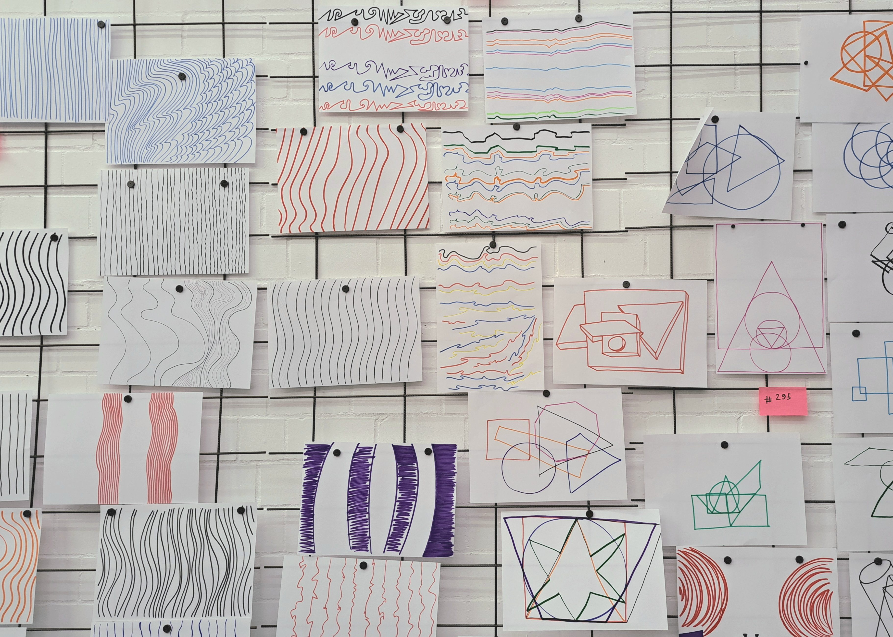
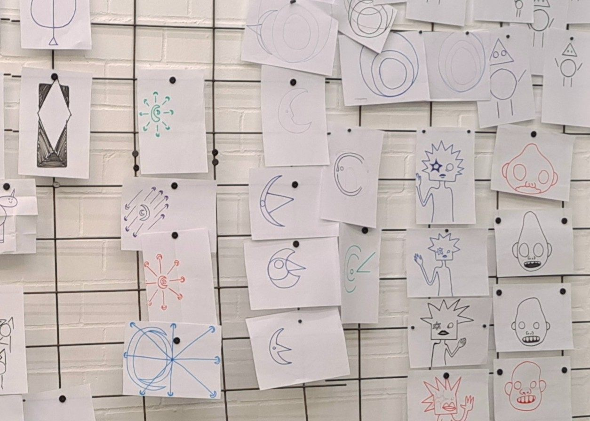

Drawing from instructions:


We started with a rather analog approach, instead of going straight into coding. The first assignment was to draw lines by following
the instructions of Sol LeWitt. In groups each person draws one Line after the other, always following the same pattern.
But while we all were following the same rules, the outcomes of each group differ greatly; Some trying to follow the instructions
as close and literal as possible and some testing the limits to their fullest extend.
Algorithms can lead to many interesting outcomes, if they leave enough freedom to explore. Also no algorithm seems to deliver the same result every time.
The same input will give individual output.
The next Assignment we tried to write our own instructions for a simple shape. A partner then had to follow these instructions to try to recreate the same shape.
I must admit it was very hard to get the outcome to match the original shape, we needed like 3 iterations to get it quite right.
This showed that just like when trying to tell a machine what to do via code, you have to be very precise and find the right wording to convey exactly what must be done.